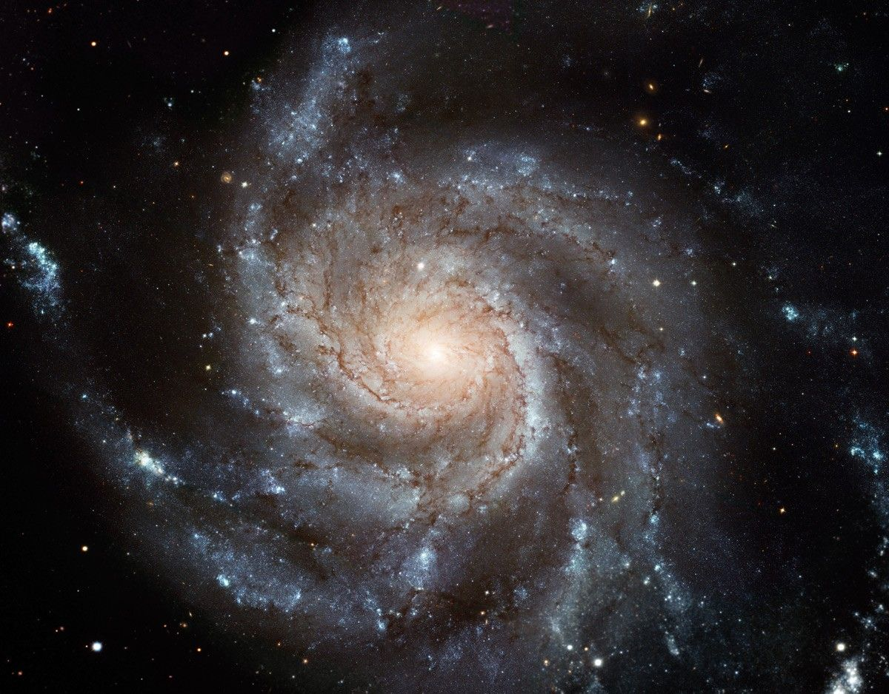
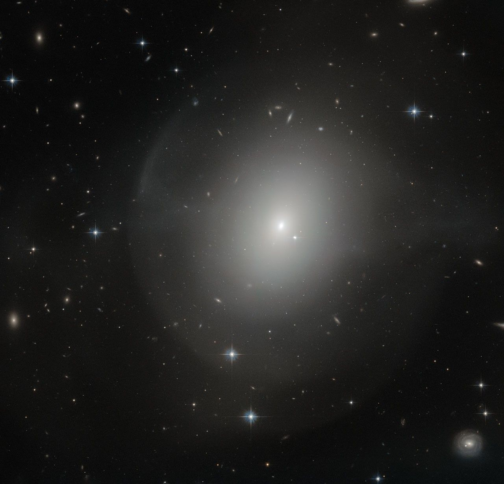
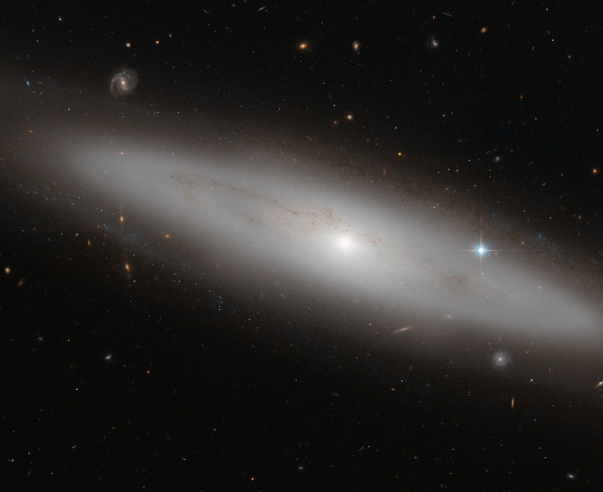
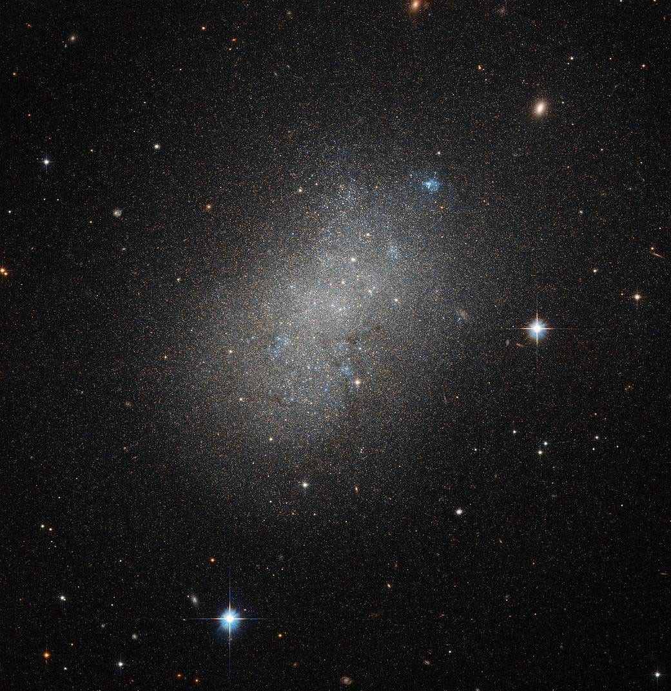

Some Types of Galaxies
- Spiral Galaxies
- Elliptical Galaxies
- Lenticular Galaxies
- Irregular Galaxies
Scientists sometimes categorize galaxies based on their shapes and physical features. Other classifications organize galaxies by the activity in their central regions. For more visit:NASA Website
Spiral Galaxies
Our Milky Way is one example of a broad class of galaxies defined by the presence of spiral arms. These galaxies resemble giant rotating pinwheels with a pancake-like disk of stars and a central bulge or tight concentration of stars.

Elliptical Galaxies
Elliptical galaxies have shapes that range from completely round to oval. They are less common than spiral galaxies.

Lenticular Galaxies
Lenticular galaxies are a kind of cross between spirals and ellipticals. They have the central bulge and disk common to spiral galaxies but no arms. But like ellipticals, lenticular galaxies have older stellar populations and little ongoing star formation.

Irregular Galaxies
Irregular galaxies have unusual shapes, like toothpicks, rings, or even little groupings of stars. They range from dwarf irregular galaxies with 100 million times the Sun’s mass to large ones weighing 10 billion solar masses.
